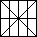

Zadania drugiego etapu Konkursu Informatycznego dla gimnazjalistów LOGIA 12
Zadanie 1 (Obrazkowa liczba).
Kolejnym cyfrom odpowiadają obrazki przedstawione na rysunkach poniżej:
|  | |||||||||
| 0 | 1 | 2 | 3 | 4 | 5 | 6 | 7 | 8 | 9 |
Napisz procedurę OL :s, która tworzy na środku ekranu rysunek zaszyfrowanej liczby reprezentowanej przez parametr :s. Parametr :s jest słowem złożonym z minimalnie 2, a maksymalnie 40 cyfr. Odstęp pomiędzy szyfrowanymi cyframi wynosi połowę szerokości cyfry 0. Szerokość całego rysunku wynosi 720.
Rysunek poniżej przedstawia efekt wywołania OL 45432
Zadanie 2 (Ile cyfr).
Napisz funkcję IleCyfr :liczba :podstawa, której wynikiem jest liczba cyfr liczby podanej jako pierwszy parametr w układzie o podstawie podanej jako drugi parametr. Parametr :liczba jest nieujemną liczbą całkowitą zapisaną w układzie dziesiętnym nie większą niż 1020, parametr :podstawa jest liczbą całkowitą większą od 1 i mniejszą niż 17.
| Wynikiem | IleCyfr 123456 10 | jest 6, |
| Wynikiem | IleCyfr 1 5 | jest 1, |
| Wynikiem | IleCyfr 255 2 | jest 8, |
| Wynikiem | IleCyfr 255 16 | jest 2. |
Zadanie 3 (Miasta).
Alicja, Tomek i Zuzanna planują wakacyjny wyjazd. Podczas podróży odwiedzą od 2 do 7 miejscowości. Ustalili już wspólną listę tych miejscowości, mają jednak problem z wyborem kolejności odwiedzanych miejsc. Każde z dzieci ma swoje preferencje.
Na przykład Alicja chce odwiedzić najpierw Poznań, potem Łódź i Kraków, a na końcu Warszawę (PŁKW). Tomek chce odwiedzić najpierw Warszawę, potem Poznań, następnie Łódź, na końcu Kraków (WPŁK). Zuzanna chciałaby, żeby zacząć od Poznania, potem pojechać do Warszawy, Krakowa, a Łódź zostawić na koniec (PWKŁ).
Pomóż im podjąć decyzję tak, aby zaproponowana kolejność odwiedzania miast różniła się jak najmniej od preferowanej przez każdego uczestnika wycieczki. Ocenę rozwiązania znajdujemy licząc łączną liczbę par miast występujących w dwóch propozycjach w innej kolejności.
Na przykład kolejność Alicji to PŁKW, Tomka - WPŁK Zuzanny - PWKŁ. Najlepsza ocena (minimalna łączna liczba zmian kolejności miejscowości) to 4, a najlepszy wybór to PWŁK, ponieważ dla Alicji oznacza to dwie zmiany kolejności (Kraków - Warszawa i Łódź - Warszawa), dla Tomka jedną (Warszawa - Poznań) i dla Zuzanny też jedną (Kraków - Łódź).
Napisz funkcję Miasta :A :T :Z, której wynikiem dla danej preferencji trójki osób będzie słowo reprezentujące kolejność odwiedzanych miejscowości o najlepszej ocenie. Jeśli kilka kolejności ma taką samą ocenę, wynikiem funkcji może być dowolna z nich.
Parametry :A, :T, :Z (a także wynik funkcji) są słowami tej samej długości reprezentującymi kolejność odwiedzania miejscowości, wszystkie dzieci wskazują te same miejscowości reprezentowane przez pojedyncze litery. Nazwy miejscowości zaczynają się od różnych liter.
| Wynikiem | Miasta "PŁKW "WPŁK "PWKŁ | jest PWŁK, |
| Wynikiem | Miasta "TSG "TGS "GST | jest TGS. |